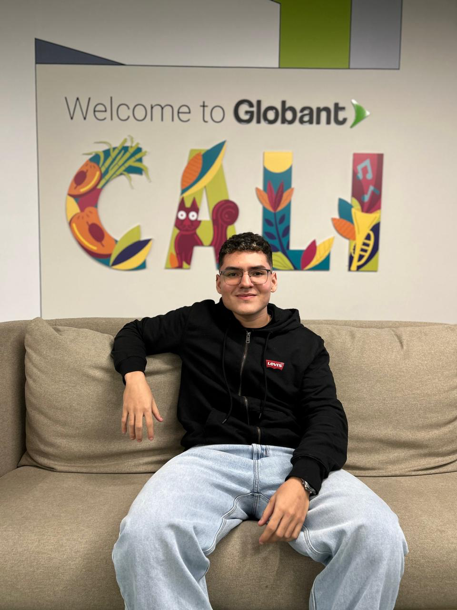

Juan Manuel Valencia Triana is a Systems Engineering student with hands-on experience in DevOps and cloud engineering practices. Currently a Junior DevOps Engineer on the JM Family project, working with Azure, Infrastructure as Code (Bicep), CI/CD, GitHub workflows, and Azure DevOps. Experienced in supporting development teams by resolving infrastructure tickets, managing cloud resources, and automating deployments across multiple environments.
JM Family (inside Globant) · DevOps / Cloud Engineering · Nov 2025 – Present
Universidad del Valle · Back-End Developer (PRAE) · Jan 2025 – May 2025
SENA · Mobile App Developer (Intern) · Feb 2025 – Jul 2025
Universidad del Valle, Tuluá — BS, Systems Engineering (2021 – 2026)
SENA, Tuluá — Technical Degree in Software Programming (2019 – 2020)